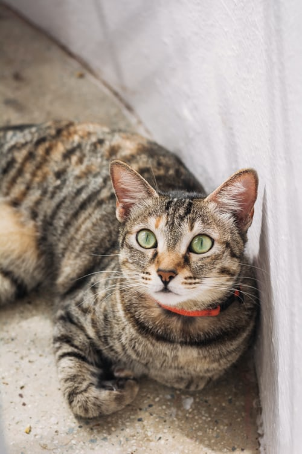
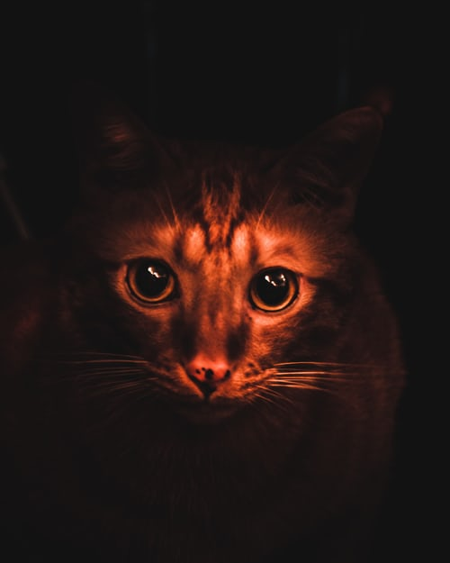
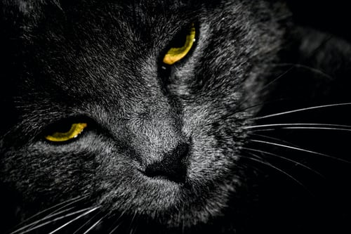

When a cat has wide open eyes means that it's attentive.

A cat's pupils can dilate when it is excited or when the light is low.

when a cat has their eyes partially closed means that it is comfortable and relax.